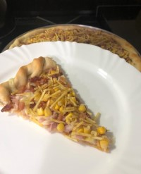

A primeira sobremesa que fiz foi, bombom de morango, mas naquela época eu não sabia nem fazer brigadeiro, deixei ele pouco tempo no fogo, ficou mole, e nem consegui enrolar no morango direito, resumindo, ficou muito feio.
Uma pessoa que foi muito importante para mim gostar tanto da culinária foi minha prima, faz anos que começamos a fazer panquecas juntas, não lembro porque quisemos fazer panqueca, mas desse dia em diante, fazemos sempre panqueca de carne moída e panqueca do chocolate Baton. É muito divertido estar com ela na cozinha.
Depois desse início, comidas doces era o que eu mais gostava de fazer, até hoje eu gosto muito de fazer sobremesas, mas atualmente também gosto de fazer comidas salgadas saudáveis e não muito saudáveis rsrs.
Percebo que evolui muito na culinária, praticar e ver muitas receitas no Youtube e Instagram contribuiu muito para que isso acontecesse, mas sei que ainda tenho muita coisa para aprender.
Atualmente, o que mais estou fazendo é comidas saudáveis, mudei bastante na cozinha, de só fazer doces, que apresentam muitas calorias, para o fit, que é muito mais saudável.
Uma curiosidade sobre mim é que gosto muito de morango, as sobremesas mais deliciosas que já fiz na minha opinião, usando essa fruta são:


